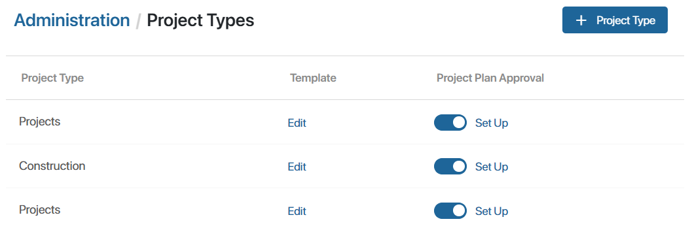
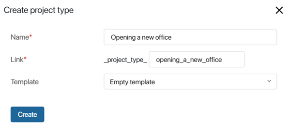

You can use several project types for different activities of one company. Each project type is a separate app with a unique project plan template, its own properties, statuses, business processes, access rights, and plan approval settings. Such apps are displayed in the Projects workspace under the Project types separator.
начало внимание
Only one project plan template can be configured for each project type.
конец внимание
If no project types are configured, only the basic type Projects applies. The basic type plan template does not contain tasks by default, but you can add them. In this case, any new project is stored as an item in the Projects app.
Create a project type
Go to the Administration > Project Types workspace and and perform the following actions:

- Click +Project Type. In the opened window, enter a name for the new type.

If you have created template projects in system version 2023.4 and earlier, an additional field appears in the settings window where you can select such a project as a new type of template. If you want to configure a plan template from scratch, select Empty template that contains no tasks.
- Click Create.
After that, an app with a new project type and a template page of this type will be added to the Projects workspace in the left menu. You can move the app under the Project Types separator using the Set Up button.
начало внимание
A project type cannot be deleted once created.
конец внимание
- Create a plan in the new project type template. To do this, on the Administration > Project Types page, in the corresponding row, select the Template column and click Edit. The template page will open.
- On the Project Schedule tab, click the Create Plan button. Then add tasks and link them.
- Publish the template plan.
Edit template
You can change the project plan in a project type template. To do this:
- Open the template page in one of the following ways:
- In Administration > Project Types, to the right of the project type name in the Template column, click Edit.
- In the Projects workspace on the Projects page or in the app with the project type name, select the required template.
- On the template page go to the Project Schedule tab and click Edit. You can edit the plan of the template in the same way as you would a project plan. After adjusting the plan, publish it.
начало внимание
Published changes to the template plan are applied only to newly created projects.
конец внимание
Customize project type
The same settings are available for any project type as for a regular app.
The basic type Projects contains forms, statuses, and processes common to all project types. You can extend this set as well as individually configure access rights.
To do this, in the left menu of the Projects workspace to the right of the project type name, click the gear icon and select:
- Form Settings. Modify the project page of the selected type and place additional fields or widgets on it.
- Status Field. Add statuses and customize their change during a business process or manually.
- Business Processes. Create processes for switching from one status to another.
- App Access. Customize access rights to the project type.
- Access Settings. Assign access rights to projects of the selected type.
начало внимание
Changes in forms, statuses, and processes in the settings of the basic type Projects are applied automatically only for newly created types. You can manually add these changes for previously created types.
конец внимание
For each project type, you can set individual settings for its plan approval.
Found a typo? Select it and press Ctrl+Enter to send us feedback